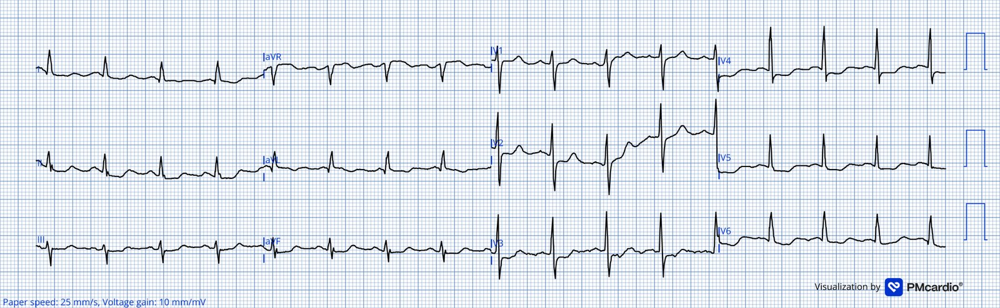
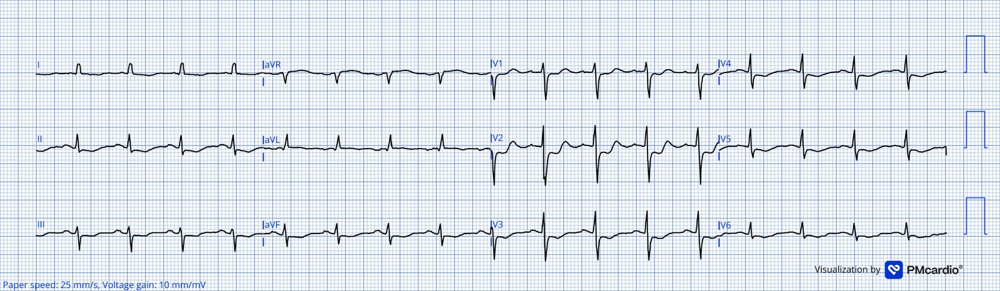
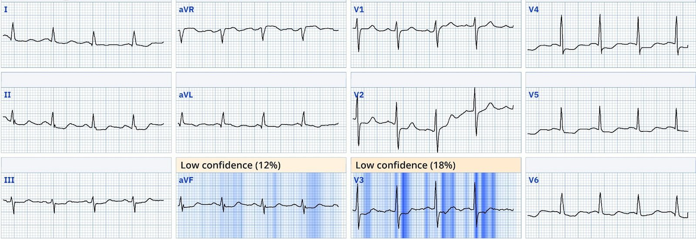
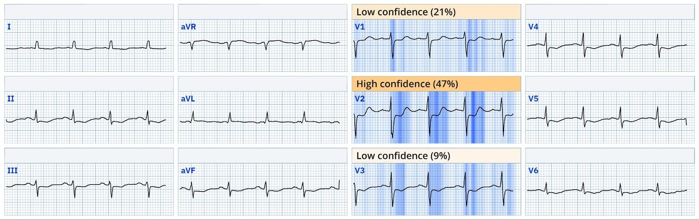
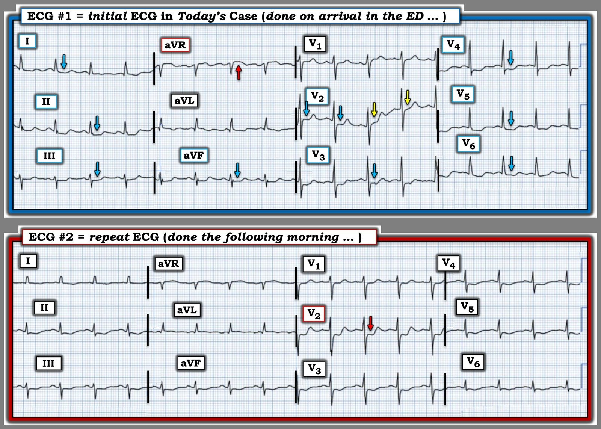

30/12/2025 — OMI hay thiếu máu cục bộ dưới nội tâm mạc (SEI)?
Bản dịch tiếng Việt của bài "OMI or Subendocardial Ischemia (SEI)?" – Dr. Smith’s ECG Blog. Giữ nguyên toàn bộ 5 hình ảnh của bản gốc.
Một phụ nữ 79 tuổi có tiền sử tăng huyết áp và một khối u não lành tính bị đánh thức bởi đau ngực và khó thở. Bà kể đã có những triệu chứng tương tự nhưng thoáng qua trong nhiều tháng, nhưng lần này triệu chứng kéo dài dai dẳng. Bà liên hệ với bác sĩ chăm sóc ban đầu, người đã chuyển bà tới khoa cấp cứu vì đoạn ST chênh xuống (không có điện tâm đồ ban đầu). Dấu hiệu sinh tồn tại khoa cấp cứu (ED) như sau: HA 159/87 mmHg, độ bão hòa oxy 99%, nhịp thở 19 lần/phút, và bà không sốt. Điện tâm đồ dưới đây đã được ghi. Bạn nghĩ gì?
Điện tâm đồ #1


Bạn nghĩ gì?
Smith: Tôi cho rằng đây là OMI thành sau và bên cao, gợi ý mạnh tắc động mạch mũ (ST chênh xuống tối đa ở V3-4; ST chênh xuống ở thành dưới là soi gương (reciprocal) với ST chênh lên ở aVL), vì vậy cần kích hoạt phòng thông tim (cath lab) khẩn cấp. Tôi chưa đọc tiếp và rất muốn biết điều gì sắp tới.
Magnus tiếp tục:
Nhịp xoang với tần số tim khoảng 100 lần/phút. Phức bộ QRS hẹp, kèm đoạn ST chênh xuống ở các chuyển đạo II, III, aVF và V3-V6. (Chuyển đạo V2 nhiều khả năng cũng có ST chênh xuống, dù nhiễu đường nền khiến khó đánh giá chính xác điều này).
Như đã nhấn mạnh nhiều lần trên blog này, ST chênh xuống do thiếu máu cục bộ dưới nội tâm mạc (subendocardial ischemia) không có giá trị định khu và không thể xác định vùng thiếu máu cụ thể. Khi đánh giá ST chênh xuống trong bối cảnh hội chứng vành cấp (ACS), điều quan trọng là phân biệt OMI với thiếu máu cục bộ dưới nội tâm mạc, vì nguyên nhân và điều trị có thể khác nhau. Cũng cần nhớ rằng SEI và OMI có thể cùng hiện diện trên một điện tâm đồ. Hình ảnh Aslanger (Aslanger pattern) là một ví dụ của điều này.
Nhìn chung, sự hiện diện của nhịp nhanh gợi ý nhiều hơn đến mất cân bằng cung-cầu (nhồi máu cơ tim típ II) hơn là tắc khu trú, trừ khi phân suất tống máu giảm nặng hoặc có biến chứng cơ học.
Smith: đây là nhịp nhanh rất nhẹ, khoảng 102 lần/phút.
Quay lại ca bệnh: Bệnh nhân được dùng morphine để giảm đau, và được ghi nhận là triệu chứng cải thiện. Không rõ bà có hết đau hoàn toàn hay không. Troponin I độ nhạy cao (hs-troponin) ban đầu tăng (2280 ng/L, tham chiếu <16). Bà được nhập viện với chẩn đoán tạm thời là nhồi máu cơ tim không ST chênh lên (NSTEMI).
Smith: morphine là tệ hại nếu bạn chưa quyết định đưa bệnh nhân vào phòng thông tim.
Magnus: Bất cứ khi nào có ST chênh xuống ở thành dưới, điều quan trọng là phải xem xét các chuyển đạo bên cao, vì ST chênh lên kín đáo ở đây có thể là manh mối của OMI thành bên. Đoạn ST ở aVL trên điện tâm đồ #1 cho thấy ST chênh lên rất nhẹ, điều mà trong bối cảnh ST chênh xuống lan tỏa, cần khiến người thầy thuốc cảnh giác với khả năng có OMI thành bên. Nếu tôi là người chăm sóc bệnh nhân này, tôi sẽ ghi lại điện tâm đồ để đánh giá các thay đổi động (dynamic) và cố gắng có một bản ghi chất lượng tốt hơn, đặc biệt là chuyển đạo V2. Ngoài ra, tôi sẽ không cho morphine vì thuốc có thể che lấp các triệu chứng đang tiếp diễn, làm phức tạp việc đánh giá lâm sàng.
Nếu triệu chứng vẫn kéo dài dù đã điều trị tối ưu, chụp mạch vành khẩn được chỉ định bất kể ST chênh xuống là biểu hiện của OMI hay của thiếu máu cục bộ dưới nội tâm mạc do ACS.
Điện tâm đồ #2


Điện tâm đồ theo dõi ghi vào sáng hôm sau cho thấy nhịp nhanh xoang và ST chênh xuống dai dẳng, nay rõ ràng tối đa ở V2. Bác sĩ Meyers và Smith đã chứng minh rằng ST chênh xuống tối đa ở V1-V4 trong hội chứng vành cấp có độ đặc hiệu cao đối với OMI. Độ đặc hiệu của ST chênh xuống do thiếu máu tối đa ở V1-V4 đối với OMI là 97%. ST chênh xuống do thiếu máu tối đa ở các chuyển đạo V1-V4 là OMI cho đến khi chứng minh được điều ngược lại, trái với ST chênh xuống tối đa ở V5-6 vốn thường là SEI (thiếu máu cục bộ không do tắc). Có một ngoại lệ cho quy tắc chung này: Trong rung nhĩ có đáp ứng thất nhanh (RVR), SEI không kèm OMI thường biểu hiện bằng ST chênh xuống tối đa ở V1-4.
Cuối cùng bệnh nhân được chụp mạch vành, cho thấy bệnh mạch vành lan tỏa (ba nhánh) và tắc gần hoàn toàn LCx. Troponin I đỉnh đạt 18.911 ng/L (tham chiếu < 16ng/L). Siêu âm tim cho thấy rối loạn vận động thành sau-bên. Dù điều trị bị chậm trễ, bệnh nhân này diễn tiến tốt. Khi thông tim thấy tắc gần hoàn toàn và nhiều khả năng đã có tái tưới máu – tắc lại trong thời gian nằm viện, với (các) đợt tái tưới máu giúp giảm thiểu tổn thương cơ tim.
Queen of Hearts đã diễn giải điện tâm đồ ban đầu như thế nào? Mô hình AI đánh dấu cả hai điện tâm đồ là OMI. Điều này thú vị, vì nó không bị ảnh hưởng bởi nhịp nhanh và vẫn nhận ra hình ảnh OMI xuyên qua ST chênh xuống lan tỏa của SEI (vốn rõ ràng cũng hiện diện).
Bản giải thích của AI (explainability) – điện tâm đồ #1


Bản giải thích của AI (explainability) – điện tâm đồ # 2


Xem ca gần đây này để thấy ví dụ về cách Queen of Hearts đánh giá ST chênh xuống ở V1-V4 là không phải OMI.
PMcardio for Individuals nay đã có mô hình Queen of Hearts mới nhất, phần giải thích của AI (bản đồ nhiệt màu xanh) và % phân suất tống máu thất trái. Tải ngay cho iOS hoặc Android: https://individuals.pmcardio.com/app/promo?code=DRSMITH20. Là thành viên của cộng đồng chúng tôi, bạn có thể dùng mã DRSMITH20 để được giảm giá độc quyền 20% cho năm đầu tiên của gói đăng ký theo năm. Tuyên bố miễn trừ: Một số Mô-đun ECG AI là thiết bị y tế mang dấu CE theo EU MDR và chỉ được chứng nhận để lưu hành tại Liên minh châu Âu và Vương quốc Anh. Công nghệ PMcardio chưa được Cục Quản lý Thực phẩm và Dược phẩm Hoa Kỳ (FDA) cấp phép sử dụng lâm sàng tại Hoa Kỳ.
Những điểm cần học
- Triệu chứng thuyên giảm hay kéo dài là yếu tố then chốt để xử trí tiếp theo; việc dùng morphine có thể che lấp sự tiến triển của triệu chứng.
- Phân biệt giữa OMI và thiếu máu cục bộ dưới nội tâm mạc trên điện tâm đồ có thể khó khăn và đôi khi cả hai quá trình chồng lấp nhau.
- Ngay cả khi đó là SEI (và không phải OMI), nếu có triệu chứng thiếu máu dai dẳng kháng trị với Nitroglycerine, bệnh nhân cần được đưa vào phòng thông tim khẩn cấp.
- Mọi cơn đau đều sẽ đáp ứng với morphine, ngay cả khi thiếu máu cục bộ và nhồi máu vẫn đang tiếp diễn, vì vậy đừng cho morphine cho đến khi đã quyết định thông tim khẩn cấp.
- ST chênh xuống ở các chuyển đạo thành dưới hoặc trước tim đòi hỏi phải xem xét kỹ các chuyển đạo bên cao và có thể ghi lại điện tâm đồ để phát hiện các thay đổi động.
Thuốc nhóm opiate liên quan với kết cục xấu hơn trong nhồi máu cơ tim.
Xem ca này: A man his 50s with chest pain. What happens when you treat with morphine rather than with reperfusion?
—-Xem nghiên cứu này cho thấy mối liên quan giữa morphine và tử vong trong ACS:
Việc dùng morphine trong ACS liên quan độc lập với tử vong, với tỷ số chênh 1.4. Meine TJ, Roe M, Chen A, Patel M, Washam J, Ohman E, Peacock W, Pollack C, Gibler W, Peterson E. Association of intravenous morphine use and outcomes in acute coronary syndromes: Results from the CRUSADE Quality Improvement Initiative. Am Heart J. 2005;149:1043–1049.
Và một nghiên cứu khác do chúng tôi thực hiện:
—-Bracey, A. Meyers HP. Smith SW. Wei L. Singer DD. Singer A. Association between opioid analgesia and delays to cardiac catheterization of patients with occlusion Myocardial Infarctions. Academic Emergency Medicine 27(S1): S220; tháng Năm năm 2020. Tóm tắt (Abstract) 556.
Kết quả chính: Bệnh nhân OMI STEMI âm tính (STEMI(-) OMI)
65 (23.9%) bệnh nhân được phát hiện có nhồi máu cơ tim do tắc (OMI) STEMI âm tính (STEMI(-)) tại thời điểm thông tim. 45 bệnh nhân OMI STEMI(-) không dùng opioid trước thông tim có thời gian từ cửa đến bóng (door-to-balloon) là 75 phút, so với 684 phút ở 25 bệnh nhân OMI STEMI(-) có dùng opioid trước thông tim.
= = =
======================================
BÌNH LUẬN CỦA TÔI, bởi KEN GRAUER, MD (30/12/2025 )
Ca hôm nay của bác sĩ Nossen là một phụ nữ 79 tuổi bị đánh thức bởi CP (đau ngực – Chest Pain) và khó thở. Khi cơn đau ngực kéo dài dai dẳng — bệnh nhân này đã liên hệ với bác sĩ chăm sóc ban đầu, người đã chuyển bà tới ED (khoa cấp cứu – Emergency Department) vì “ST chênh xuống” trên điện tâm đồ tại phòng khám của bà (điều đáng tiếc là bản ghi này không có).
- Điểm MẤU CHỐT #1: Điện tâm đồ ban đầu trong ca hôm nay ( = điện tâm đồ #1) — là điện tâm đồ đầu tiên được ghi tại khoa cấp cứu. Điều quan trọng cần nhận thức là việc chúng ta không có được điện tâm đồ tại phòng khám (vốn được ghi một khoảng thời gian nào đó trước điện tâm đồ #1) cho thấy rõ chúng ta đã đánh mất một “cơ hội vàng” để chẩn đoán xác định OMI cấp từ điện tâm đồ đầu tiên tại khoa cấp cứu (nhờ đó có thể rút ngắn thời gian đến khi kích hoạt phòng thông tim tới nhiều giờ!).
- Nói đơn giản — chúng ta thiếu những điều sau: — i) Biết được mức độ nặng tương đối của triệu chứng ở bệnh nhân này vào thời điểm bà được bác sĩ chăm sóc ban đầu khám? (và vào thời điểm điện tâm đồ #1 được ghi); — ii) Chúng ta không thể so sánh điện tâm đồ tại phòng khám với điện tâm đồ đầu tiên tại khoa cấp cứu để xem liệu có thay đổi điện tâm đồ “động” giữa 2 bản ghi này hay không; — và, iii) Chúng ta không thể đối chiếu mức độ nặng tương đối của cơn đau ngực với các dấu hiệu trên điện tâm đồ tại phòng khám và điện tâm đồ đầu tiên tại khoa cấp cứu được ghi “X” phút (hay vài giờ?) sau khi ghi điện tâm đồ tại phòng khám (tức là, việc cơn đau ngực giảm hay tăng mức độ đi kèm với “ST chênh xuống” cải thiện hay nặng lên có thể đã cung cấp dữ liệu đối chiếu MẤU CHỐT về tính cấp tính và tình trạng của mạch “thủ phạm” [tức là, thông hay tắc]).
= = =
- Điểm MẤU CHỐT #2: Bên cạnh những Điểm cần học quan trọng mà bác sĩ Nossen đã nêu — tôi muốn nhấn mạnh rằng ở bệnh nhân nguy cơ cao này (do tuổi cao; tiền sử gần đây có đau ngực từng cơn — với bệnh sử rất đáng lo ngại khiến bà phải tới khoa cấp cứu, là bị đánh thức bởi đau ngực và khó thở) — một điện tâm đồ ghi lại tại khoa cấp cứu lẽ ra phải được thực hiện trong vòng không quá 15-30 phút sau điện tâm đồ #1 (thay vì đợi đến sáng hôm sau).
= = =
Để rõ ràng và dễ so sánh, trong Hình 1 — tôi đã đặt 2 điện tâm đồ đầu tiên của ca hôm nay cạnh nhau.
- Như bác sĩ Nossen đã nêu — điện tâm đồ đầu tiên tại khoa cấp cứu biểu hiện ST chênh xuống lan tỏa ở 9/12 chuyển đạo (các mũi tên XANH LAM ở chuyển đạo I,II,III; aVF; V3-đến-V6 — và gần như chắc chắn cả ở chuyển đạo V2, dựa vào 2 mũi tên XANH LAM đầu tiên ở chuyển đạo này) — kèm theo ST chênh lên ở chuyển đạo aVR (mũi tên ĐỎ ở chuyển đạo này).
Như đã được nhấn mạnh nhiều lần trên Dr. Smith’s ECG Blog (Xem Bình luận của tôi trong bài ngày 1 tháng Ba năm 2023, cùng nhiều bài khác) — hình ảnh điện tâm đồ mà chúng ta thấy ở điện tâm đồ #1 gợi ý mạnh DSI (thiếu máu cục bộ dưới nội tâm mạc lan tỏa – Diffuse Subendocardial Ischemia = SEI [thiếu máu cục bộ dưới nội tâm mạc – SubEndocardial Ischemia]) — và cần ngay lập tức gợi ra các cân nhắc chẩn đoán sau đây:
- Bệnh mạch vành nặng (do tổn thương thân chung động mạch vành trái, LAD đoạn gần, và/hoặc bệnh 2 hoặc 3 nhánh mạch vành nặng) — mà trong bối cảnh lâm sàng phù hợp có thể chỉ ra ACS (hội chứng vành cấp – Acute Coronary Syndrome).
- Thiếu máu cục bộ dưới nội tâm mạc do Nguyên nhân khác (tức là, nhịp nhanh kéo dài — nhịp xoang hoặc do một rối loạn nhịp khác; sốc/tụt huyết áp nặng; xuất huyết tiêu hóa; thiếu máu; v.v.).
LƯU Ý #1: Với bệnh sử trong ca hôm nay (bị đánh thức bởi cơn đau ngực dữ dội khởi phát đột ngột) — DSI ở một bệnh nhân có bệnh mạch vành nặng phải được đặt lên đầu danh sách các cân nhắc chẩn đoán của chúng ta.
- LƯU Ý #2: Như cũng thường được nhấn mạnh trên Dr. Smith’s ECG Blog — tần số tim nhanh trên điện tâm đồ #1 (gần 100 lần/phút) đi kèm với khó thở khi bệnh nhân này thức dậy, cần gợi ý đến một trong các nguyên nhân khác đã liệt kê ở trên (bên cạnh bệnh mạch vành nền nặng) là lý do gây ra triệu chứng của bà và các dấu hiệu điện tâm đồ trên bản ghi ban đầu này.
= = =
Hãy NHÌN lại cả hai điện tâm đồ trong Hình 1:
- CÂU HỎI: BẠN thấy (những) khác biệt nào?
= = =
Hình 1: So sánh giữa điện tâm đồ đầu tiên tại khoa cấp cứu — và điện tâm đồ ghi lại vào sáng hôm sau.


= = =
TRẢ LỜI: BẠN thấy (những) khác biệt nào?
Điểm MẤU CHỐT #3: Hãy để ý việc nhận ra khác biệt giữa 2 bản ghi trong Hình 1 DỄ DÀNG hơn bao nhiêu — khi bạn so sánh từng chuyển đạo một với hai điện tâm đồ đặt ngay cạnh nhau!
- Như bác sĩ Nossen đã nêu — mũi tên ĐỎ ở chuyển đạo V2 của điện tâm đồ #2 làm nổi bật sự thay đổi rõ rệt về hình dạng, cũng như mức ST chênh xuống tăng lên trên điện tâm đồ ghi lại này so với điện tâm đồ ban đầu.
- Ngoài ra — tôi nghĩ ST chênh xuống cũng bớt rõ hơn ở đa số chuyển đạo trên điện tâm đồ #2 so với điện tâm đồ #1 (kể cả ST chênh lên ở chuyển đạo aVR cũng ít hơn!). Với tôi — bức tranh điện tâm đồ này trên điện tâm đồ ghi lại nay rõ ràng gợi ý cả bệnh nhiều nhánh mạch vành nền nặng lẫn OMI thành sau cấp (dựa vào việc nay rõ ràng là ST chênh xuống tối đa ở chuyển đạo V2! ).
- Điểm MẤU CHỐT #4: Với các dấu hiệu trên ở điện tâm đồ #2 — tôi không khỏi tự hỏi liệu điện tâm đồ #1 có cũng đã đủ để chẩn đoán OMI thành sau cấp hay không, nếu bản ghi ban đầu được ghi lại ngay để có một đường nền đẳng điện! (tức là, mũi tên XANH LAM thứ 2 ở chuyển đạo V2 của điện tâm đồ #1 gợi ý rằng đã có ST chênh xuống tối đa ở chuyển đạo này trên điện tâm đồ ban đầu — và — đường nền trôi ở chuyển đạo V2 khiến chúng ta không thể dùng các đoạn ST tại mũi tên VÀNG để xem xét). Nếu điện tâm đồ ban đầu được ghi lại trong vòng 15-đến-30 phút với sự chú ý để có đường nền phẳng — chẩn đoán xác định có lẽ đã đạt được sớm hơn nhiều giờ so với thực tế.
= = =
Điểm MẤU CHỐT cuối cùng của tôi: Dù bác sĩ Nossen đã đưa điểm cuối cùng này của tôi vào trong các Điểm cần học của ông — điều này vẫn đáng nhắc lại. Đó là, sự hiện diện của bệnh nhiều nhánh mạch vành nền nặng thường sẽ làm phức tạp việc phân biệt giữa DSI với OMI cấp với cả DSI + OMI cấp.
- Trong những ca như vậy — chú ý thêm tới các phương tiện thăm dò bổ sung có thể đóng vai trò quan trọng giúp nhanh chóng nhận ra những bệnh nhân có cả DSI + OMI cấp (tức là, ghi các điện tâm đồ liên tiếp thường xuyên để tìm thay đổi ST-T “động” — siêu âm tim cho thấy rối loạn vận động thành khu trú [như siêu âm tim đã cho thấy trong ca hôm nay] — đối chiếu với các lần đo troponin liên tiếp và mức độ nặng tương đối của triệu chứng bệnh nhân ứng với từng điện tâm đồ liên tiếp được ghi).
= = =
= = =